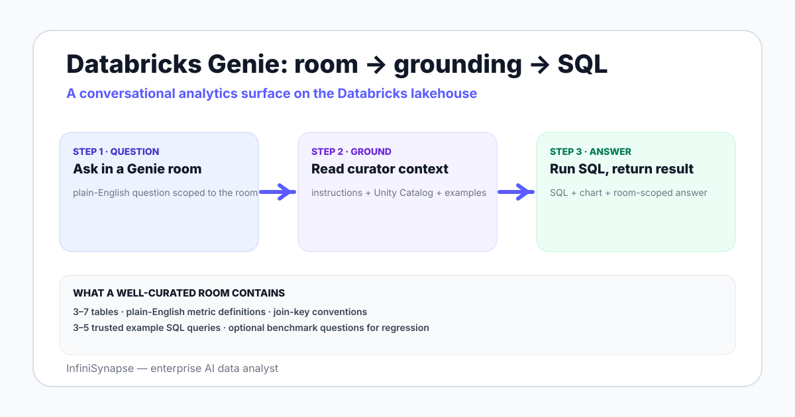

Databricks Genie in 2026: What It Is, How It Works, and Where It Fits
A working guide to Databricks AI/BI Genie — the conversational analytics surface built on Unity Catalog. What it does, how rooms are set up, where it earns the seat, where teams move past it.
AuthorInfiniSynapse Research, product and data architecture team
Published2026-06-28 · Last verified 2026-06-28 · Next review 2026-09-28
Evidence baseDatabricks official documentation on AI/BI Genie, public release notes, Unity Catalog reference, hands-on usage in 2026, and Databricks community examples.
Disclosure: This page is published by InfiniSynapse, which sells an AI data analyst that competes with Databricks Genie on some workloads. The review notes both where Genie is the right call and where InfiniSynapse fits — written so you can use the rubric to evaluate either vendor.
TL;DR
Databricks AI/BI Genie is a conversational analytics surface that lives on the Databricks lakehouse — users ask in plain English, Genie generates SQL against Unity Catalog tables, and a chart and answer come back.
Genie rooms are the unit of curation — a room is a curated set of tables, instructions, and example queries an analyst defines for a business audience.
Genie is a strong fit when your data lives in Databricks, Unity Catalog governance is in place, and a data team can curate rooms for each business audience.
It is weaker when sources sit outside Databricks, when the question class is open-ended exploration across a knowledge base of business definitions, or when audit-grade evidence trails are a procurement requirement.
Honest comparison points include Snowflake Cortex Analyst, ThoughtSpot Spotter, Tableau Pulse, and AI data analysts such as InfiniSynapse — each lands a different tradeoff between curation, openness, and source spread.
Databricks AI/BI Genie is a conversational analytics surface on the Databricks lakehouse — users ask questions in plain English, Genie retrieves the room curator instructions plus Unity Catalog metadata, generates SQL against selected tables, and returns an answer with a chart. It works well on curated Databricks-resident data; it is weaker outside the lakehouse and on open-ended exploration.

Genie rooms, Unity Catalog, and how grounding works
The unit of Genie is the room. A room is a curated workspace where a data team picks tables from Unity Catalog, writes general instructions ("monthly revenue means net revenue, excluding refunds"), adds example SQL queries the team trusts, and optionally pins benchmark questions. When a user asks a question inside the room, Genie sees the curator's instructions, the schema metadata, and the saved examples as grounding context before it drafts SQL.
The grounding stack
Unity Catalog metadata — table names, column names, types, comments, lineage. The cleaner the catalog comments, the better Genie's SQL.
Curator instructions — a free-text policy block where the room owner defines metrics, joins, filters, and conventions in plain English.
Example SQL — saved queries the room owner attests are correct. Genie uses these as patterns when a similar question arrives.
Benchmark questions — optional sample questions with expected answers, useful for regression testing as the underlying data changes.
The pattern matches what other AI data tools call a knowledge base binding: pair the database with a curated layer of business definitions a model can retrieve before writing SQL.
How to set up a Genie room — five real steps
Pick the audience first. A room for finance leadership is not a room for marketing analysts. Audience determines the table set, the curator instructions, and the metric definitions.
Curate the table set. Start with three to seven tables that answer 80% of the audience's questions. Resist adding the full catalog — Genie performs better on a tight set than a sprawling one.
Write the curator instructions in plain English. Spell out which join keys to prefer, how status columns map to business states, what timezone to apply, and which rollup table is canonical for each metric.
Add three to five trusted example queries. Pick the questions an analyst already answers weekly. These become the patterns Genie reaches for first.
Iterate on real questions. Open the room to a small group, log the questions they ask, watch where Genie's SQL drifts, refine the instructions and add new examples. Plan for a two-week curation tail before broad rollout.
The first three steps are where most failed rollouts skip — they open Genie on the full warehouse and ask the audience to discover what works, which produces low confidence and quick abandonment.
Where Databricks Genie is the right pick
Three signals point clearly to Genie:
Your data already lives in Databricks. Unity Catalog is the source of truth, Delta tables are the storage layer, and your analysts work in Databricks notebooks. Genie inherits the governance and connection model you already operate.
You have an active data team to curate rooms. Genie's quality is bounded by the room curator's discipline. Without a data engineer or analytics engineer who owns the rooms, quality drifts.
Your audience asks pattern-shaped questions. "Top X by Y this quarter" or "Trend of Z over the last 12 months" are exactly the shape Genie handles best — and exactly the shape good curator examples cover.
The fit gets stronger when Databricks SQL Warehouse is already your serving layer for BI — Genie reuses the same compute and the same governance posture, which collapses procurement overhead.
Where Genie falls short in 2026
Genie's honest limits show up in four places:
Limit
What happens
What it implies
Lakehouse-bound
Sources outside Databricks (a transactional PostgreSQL, a Snowflake share, an Excel attachment) sit outside the room
Cross-source questions need a federation layer or a different tool
Room curation cost
Each business audience needs its own curated room
The hidden cost is an ongoing analytics-engineering job, not a one-time setup
Open-ended exploration
Genie's quality compounds on questions near the saved examples and degrades as questions drift from them
For novel questions on a fresh dataset, the agent loop is shallower than a deeper data agent
Evidence trail depth
Genie shows the SQL it ran and the result
For audit-grade approval (NIST AI RMF aligned) some procurement teams want planner-executor-verifier separation and explicit verification queries on every result
None of these are dealbreakers — they are honest tradeoffs the room owner inherits. A team that lives in Databricks and curates rooms well gets a lot of mileage. A team with split sources, no analytics engineer, or strict audit needs hits the limits faster.
Fair alternatives and when to pick them
Alternative
Best at
Tradeoff vs Genie
Snowflake Cortex Analyst
Conversational analytics on Snowflake, with semantic model
Same shape as Genie on a different warehouse
ThoughtSpot Spotter
Long-running search-driven BI with chart suggestions
Stronger non-technical UX, separate governance footprint
Tableau Pulse / Power BI Copilot
Conversational layer over an existing semantic model
Reuses semantic model investment, deep BI integration
Cross-source analysis with a deeper agent loop and bound knowledge base
Adds a planner-executor-verifier pattern and source spread beyond a single warehouse
If you live in Databricks, Genie is the path of least resistance. If your data spans Databricks plus PostgreSQL plus a few S3 prefixes, an external AI database query agent answers the cross-source questions Genie cannot reach. If your audience is non-technical and chart-driven, Spotter or Pulse may land better than a SQL-shaped surface.
A practical selection rubric
Six questions to triage in a 30-minute review:
What share of the data lives in Databricks today?
Who owns curation — is there a named analytics engineer per business audience?
What is the question class — pattern-shaped recurring asks, or open-ended exploration?
Is cross-source analysis on the roadmap in the next two quarters?
Does your audit posture require planner-executor-verifier separation?
Which BI surface owns the chart-rendering contract?
Three or more "Databricks-only, curated, pattern-shaped" answers → Genie. Three or more "cross-source, open-ended, audit-deep" answers → an external data agent. Middle ground → run both in parallel for one quarter and let real usage decide.
Genie is excellent on the questions a curator has rehearsed and weaker on the questions nobody saw coming. Plan curation accordingly.
Compare Databricks Genie to a cross-source AI data analyst
Connect a Databricks lakehouse plus a second source (PostgreSQL, MySQL, Snowflake, S3, or CSV) read-only, seed a small knowledge base of business definitions, and ask one open-ended question that spans both sources. The plan, SQL, and verification step come back in the trace.
Databricks AI/BI Genie is a conversational analytics surface on the Databricks lakehouse. A user asks a question in plain English inside a curated room; Genie reads the curator instructions, Unity Catalog metadata, and saved example queries, generates SQL, and returns an answer with a chart. It is positioned as the natural-language entry point on top of Databricks SQL Warehouse and Unity Catalog.
How does a Genie room work?
A room is a curated workspace where a data team selects tables from Unity Catalog, writes plain-English instructions about metrics and join keys, and adds three to five trusted example queries. When a user asks a question inside the room, Genie sees the instructions, the schema, and the examples as grounding context before drafting SQL. Quality is bounded by how well the room is curated.
When should I pick Databricks Genie over a third-party data agent?
Pick Genie when your data lives in Databricks, Unity Catalog governance is already in place, and a data engineer or analytics engineer owns curation for each business audience. Genie inherits the lakehouse governance posture and reuses the same compute, which collapses procurement and operating overhead.
Where does Databricks Genie fall short in 2026?
Four places: sources outside Databricks sit outside the room, each business audience needs its own curated room, quality degrades as questions drift away from saved examples, and the evidence trail is the SQL plus the result rather than a planner-executor-verifier separation some audit postures require. None of these are dealbreakers — they are honest tradeoffs.
What is the difference between Databricks Genie and Snowflake Cortex Analyst?
Both are conversational analytics surfaces on a single warehouse — Genie on Databricks, Cortex Analyst on Snowflake. The architectures are similar in shape and the tradeoffs are similar in kind. Pick by which warehouse your data lives in today, since neither one ranges across cloud warehouse boundaries without help from a federation layer.
Can Databricks Genie answer questions across Databricks and other sources?
Not natively. Genie operates inside a Databricks room and uses Unity Catalog tables. If your data spans Databricks plus a transactional PostgreSQL plus a few S3 prefixes, you either federate everything into Databricks first or use an external AI database query agent that connects to each source directly and answers across them.
How do I curate a Genie room well?
Pick the audience first, then a tight set of three to seven tables, then write plain-English curator instructions that spell out metric definitions and preferred join keys, then add three to five trusted example queries the team already answers weekly. Open to a small pilot group, watch where SQL drifts, and refine instructions and examples for two weeks before broad rollout.
Methodology and review notes
Last updated: 2026-06-28 · Next scheduled review: 2026-09-28
This guide was written by reviewing the Databricks AI/BI Genie official documentation, the Unity Catalog reference, public Databricks release notes through 2026-Q2, and field usage in real Genie rooms. The rubric and limits section reflect honest tradeoffs observed across multiple rollouts, not vendor marketing.
Conflict of interest: InfiniSynapse publishes this guide and sells an enterprise AI data analyst. To reduce bias, the page leads with the topic itself, treats InfiniSynapse as one option among many, and links to external sources for every numeric claim.
Update cadence: Reviewed every 90 days for accuracy and link health.